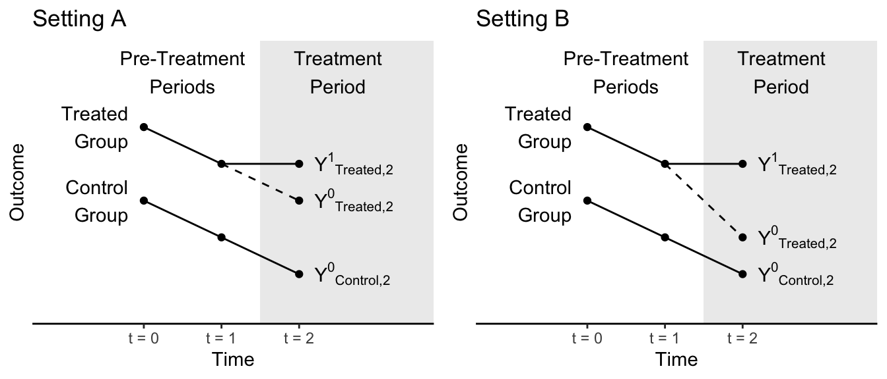
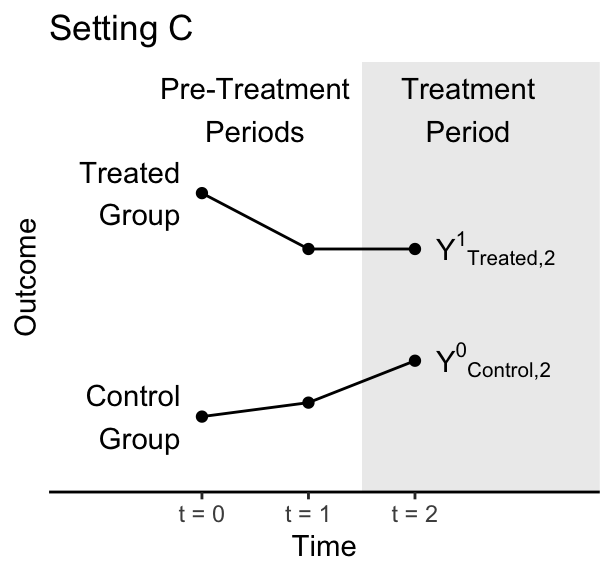
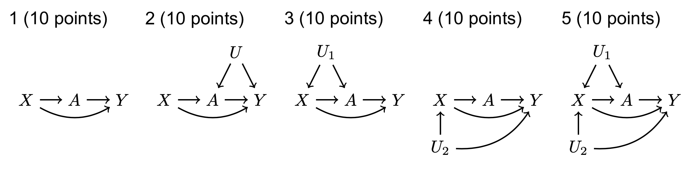

Problem Sets
This page will contain a problem set corresponding to each class meeting. The problem sets are very open-ended and are designed to connect the material from class to your ongoing project.
For every problem set, submit a PDF. If your code is not embedded in your PDF, then also submit a code file.
We chose together the following weekly pattern for problem sets:
- Wednesday lecture
- Problem set due the following Monday at 9pm
- Peer review due Wednesday at 9am
We will be using identified peer reviews. The reason these are not anonymous is that we are a small class, and we will get to know one another’s projects. Your peer reviewer will not be grading you or assigning point values, but they will be commenting on your work. A good peer review is a short paragraph that comments on promising aspects of your peer’s work as well as offering suggestions for improvement or future directions.
Problem Set 1
1. Your ongoing paper.
1.1. (15 points) Write an abstract of your research paper.
1.2. (5 points) What is one unit-specific quantity in your paper?
1.3. (5 points) What is one target population in your paper?
2. Regression for a conditional mean
(25 points)
In class, we used OLS regression to predict the mean outcome in a subgroup. Do the same thing in a dataset of your choosing, which might be the dataset from your project. Define the outcome variable and the population subgroup you are describing.
Problem Set 2
- (20 points) In your project, do you have something analogous to many groups with a few observations per group? This could more generally be any case where the number of parameters to be estimated is somewhat large for the sample size available. If not in your project, think of an example in your general research area. Write a few sentences about why one might want penalized regression in that setting.
The remainder of this problem set is based in the idea of multilevel models, though you can alternatively estimate by LASSO or ridge regression if you prefer. You can complete parts (2) and (3) in your own dataset if you can define at least 10 groups with at least 20 units per group. Wherever we say “team”, substitute whatever group is in your dataset. You may also use the baseball_population.csv data, in which the group variable is team.
(15 points) Draw a sample of 5 units per group. Estimate an unpenalized OLS regression and a penalized regression (multilevel, ridge, or LASSO). Produce a graph that compares the predicted values.
(15 points) Repeat the exercise above but with a sample of 20 units per group. Visualize the estimates. How do your results change?
Note that on (3) it is likely that the estimates will look different from (2), but it is also possible that they will be similar depending on your setting. For example, if your algorithm sets a very large penalty in your setting then all the group-specific deviations could be shrunk to zero in both (2) and (3). There are many right answers.
Problem Set 3
Using the simulation data from class or data from your own project:
(15 points) Estimate a regression tree and visualize it. If you are using R, there are packages to visualize the tree. If you are using Stata, there may be packages or you are welcome to use the summary text output.
(10 points) Write 3-4 sentences for someone who has never heard of this method. Pick some predictor vector value and explain how the tree produces a prediction for that predictor vector.
(15 points) Estimate a random forest. Visualize the predicted values as a function of the predictors. If your data have only two predictors, this could be as in class with one on the \(x\)-axis and one for colors. If you have many predictors, you may need to find a creative way to visualize your predictions. You may choose to make predictions while holding one or more variables at a single value.
(10 points) In a few sentences, give an example of a problem in your area of research (possibly your paper) where the functional form linking \(\vec{X}\) to \(E(Y\mid\vec{X})\) is unknown, such that a random forest might be a way to learn the functional form from the data.
Problem Set 4
Write the abstract of your research paper. If you do not have results yet, pretend that your results are really amazing! You can make up any estimates that you want. As an added challenge, try writing the abstract twice with two sets of possible results. It would be ideal if all possible results are interesting.
As you write, minimize jargon so that you are writing for a New York Times reader. Emphasize big claims and don’t bury them in statistical terminology. The goal of this exercise is to help us ask and frame a high-impact question that will speak to a broad audience. Possibly, the exercise will lead you to change your question.
Your peer reviewer should comment on things that may include:
- what about this abstract is especially compelling?
- what parts (if any) about this abstract are directed to a small subset of academia and perhaps should be broadened? This may be parts with jargon.
- what claims could be emphasized more?
The hope is that by writing an abstract (or abstracts) with findings that you could produce, we might come up with better ways of asking and presenting our questions.
Problem Set 5
This problem set is unlike the preceding ones in two ways. It is entirely conceptual, with no data analysis, and it is entirely about hypothetical examples rather than your paper. It is a chance to reinforce a few basic ideas from our class on panel data. Questions 1–5 are on difference in difference. Questions 6–7 are on regression discontinuity.
In the figures below, the treated group becomes treated between time 1 and time 2. The control group never becomes treated. Figures are hypothetical scenarios that depict true potential outcomes even if those outcomes would not be observed in an actual study.
1 (10 points). In which setting does the parallel trends assumption hold: A, B, neither, or both?
2 (10 points). In actual data analysis, can we ever know for certain whether we are in Setting A or Setting B? If the answer is no, then tell us which outcome cannot be observed.
3 (10 points) A researcher comes to you with the data below, which depict only observed outcomes. That researcher wants to run a difference in difference analysis. Here, we have not depicted the counterfactual outcome because the researcher would not know it. Why is the parallel trends assumption doubtful in this setting?

4 (10 points). A researcher is interested in the causal effect of a minimum wage increase on employment. They plan to analyze data on the U.S. only, and they are interested in a time when the minimum wage rose simultaneously at every place in the U.S. Why won’t a difference in difference design work for the researcher’s question?
5 (10 points). Propose another design that the researcher could use to answer the question in (1.4), which may involve data outside the U.S. or may involve a different analysis of data within the U.S. Answer this question in no more than 3 sentences. Many answers are possible.
Problem Set 6
Construct a bootstrap confidence interval using data from your project. Some things to tell us in writing include:
- what is your population parameter?
- what is your estimator?
- how many bootstrap samples did you draw?
- did you use the Normal approximation or the percentile method?
If your data are not suitable for a bootstrap confidence interval for some reason (e.g., you have the entire population so that confidence intervals don’t make sense), go ahead and carry out the steps for practice and then tell us why the bootstrap might not be appropriate in your setting.
Problem Set 7
For (1) to (5),
- List all paths connecting \(A\) and \(Y\). Remember that a path can be written in one line as a sequence of nodes connected by edges.
- For each path, answer
- is this path open before we condition on anything?
- is this path open conditional on \(X\)?
- Are any non-causal paths between \(A\) and \(Y\) open once we condition on \(X\)? In other words, other than causal paths from \(A\) to \(Y\) is there any other reason \(A\) and \(Y\) would be associated conditional on \(X\)?

Problem Set 8
1 (25 points). A DAG in your research area.
In your research project or field of research, define a causal question. Define the treatment variable and potential outcomes. Draw a DAG and identify a sufficient adjustment set given your DAG.
Coding help: How to draw a DAG.
For this class, you can draw your DAG by hand and take a picture of it, and include the picture in your writeup. Alternatively, you can learn to type a DAG as a tikzpicture in LaTeX, as I do. Both are equally good!
To produce a DAG with code, I include the following in my LaTeX document header:
\usepackage{tikz}
\usetikzlibrary{arrows,shapes.arrows,positioning,shapes,patterns,calc}Then I use code like the below to draw a DAG.
\begin{tikzpicture}[x = .3in, y = .3in]
\node (x) at (0,-1) {$X$};
\node (a) at (0,0) {$A$};
\node (y) at (1,0) {$Y$};
\draw[->, thick] (x) -- (a);
\draw[->, thick] (a) -- (y);
\draw[->, thick] (x) -- (y);
\end{tikzpicture}2 (25 points). Outcome model for causal inference.
Define a causal estimand and estimate it using an outcome model. You are welcome to use any causal estimand you are interested in, in any dataset you like (potentially from your project). The outcome model can be statistical (e.g., OLS) or a more data-science model (e.g., random forest).
If you’d rather use data we provide, feel free to use the data from my analogous undergrad problem set. This is a simulated version of data from an ongoing project with Soonhong.